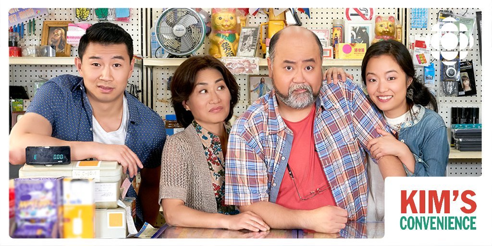

Jean Yoon is an American-born Canadian playright and actress of Korean ancestry. She has lived and worked in Vancouver, Edmonton, Harbin City, and Yanji City and lives in Toronto. Jean Yoon began her carrier in the early 1980s in Toronto in theatre as an actress working with companies such as Upsatge Theatre, Toronto Free Theatre and Canasian Artists Group. A decade later, in 1995, Jean Yoon started her own group called Loud MOuth Asian Babes which focused on the Korean Diaspora.
Jean Yoon started focusig on acting in the early 2000s with roles in several television series. She gained greater recognition after playing the flight attendant in The Path to 9/11 and June Kim in This is Wonderland in 2006. In 2009, She took the role of Dr. Montague in The Time Traveller's Wife. Her carrier flouished in 2010 and onward having roles in Remedy as Imena Khumalo, Connie in Peg+Cat, Captain Teresa Yao in The Expance and Janis Beckwith in Orphan Black. Jean Yoon is well-known for her role as Umma in Kim's Convience and CBC mini-series Dragon Boys.